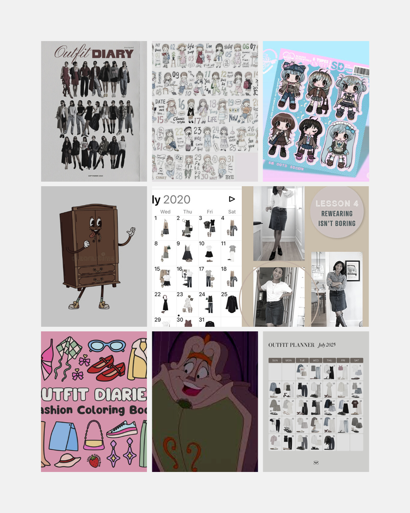
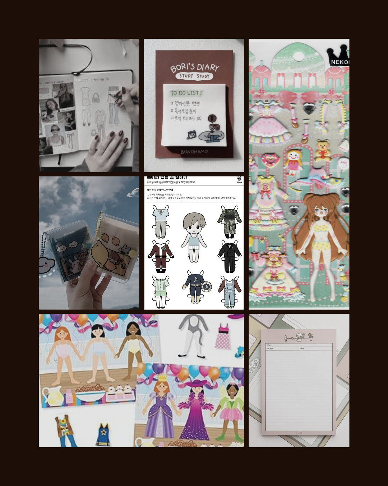
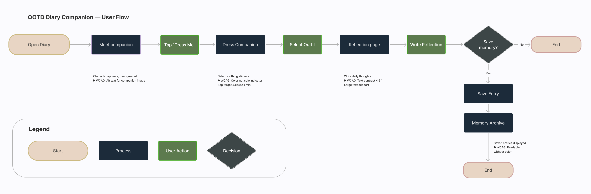
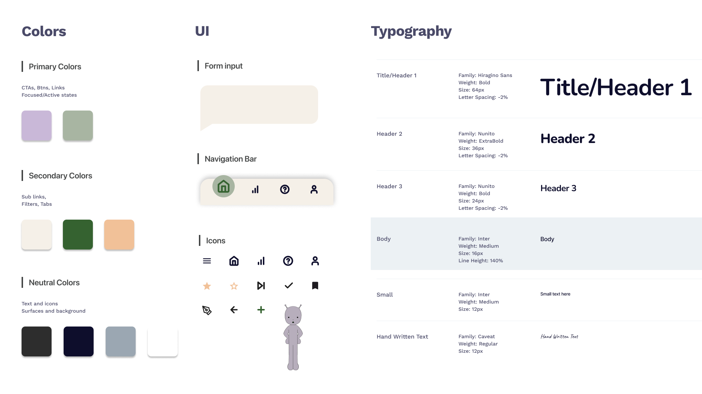
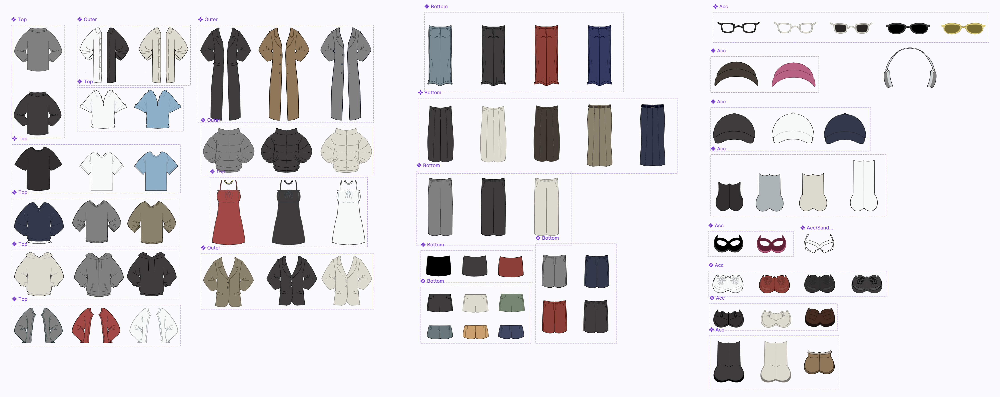
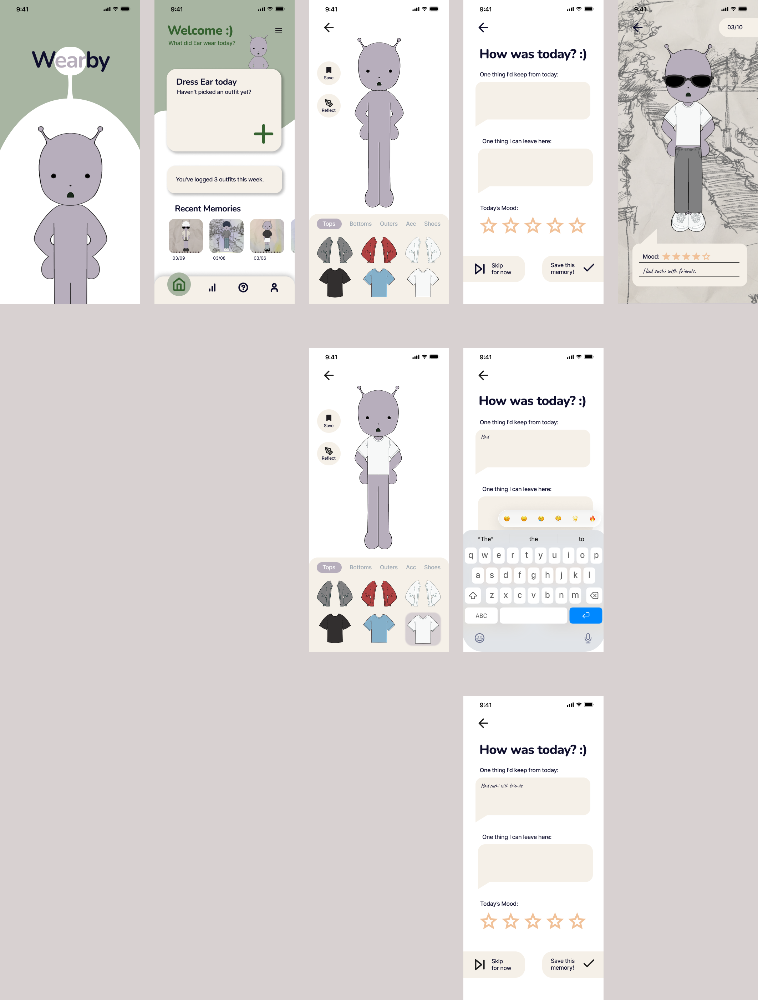

The Problem
Daily reflection tools feel serious and effortful. Users who want gentle emotional check-ins have no tool that feels approachable, low-pressure, or fun.
The Solution
A mobile companion app where dressing up a character named Ear becomes a daily ritual, turning reflection into play rather than a task.
Who this is for
Young adults aged 18-30 who want to reflect on their day but find traditional journaling apps intimidating, effortful, or too serious. They track outfits casually but have no tool that connects that habit to emotional wellbeing.
What we learned
Through secondary research and 19-participant preference testing, we found that playful, low-stakes interactions lower the barrier to daily reflection significantly more than structured journaling prompts.
TL;DR
End-to-end UX design for a playful mobile app that turns daily outfit logging into emotional reflection
Challenge
Reflection apps feel like homework. Users who want gentle emotional check-ins have no tool that feels low-pressure, playful, or genuinely approachable.
Approach
System before screens. Component library and design tokens built first, WCAG AA embedded at the user flow stage, play mechanic grounded in cortisol and resilience research.
Solution
A dress-up companion app with a scalable Figma component library, token-based design system, WCAG-annotated user flows, and a physical diary extension.
Outcome
Ongoing project in active development. Every downstream screen decision became faster because the system was defined upstream. Physical companion prototype in progress.
Key Design Decisions
Three choices that defined the direction, each grounded in research not preference.
01
Play over journaling
Research shows play lowers cortisol and supports emotional resilience in adults. Dressing up Ear creates a low-pressure emotional state where reflection happens naturally, without the intimidation of a blank page.
02
System before screens
The component library and design tokens were built before any UI screen. Naming every clothing component Category/Type/Color made variant switching fast and consistent, every downstream decision got easier.
03
Accessibility from the start
WCAG AA was embedded at the user flow stage, not retrofitted. Contrast ratios, 44x44px tap targets, and label pairings were design decisions, not compliance checkboxes, making the product better for all users.
Every feature is evidence-backed, not assumption-driven.
Secondary research grounded each product decision:
Play is associated with lower cortisol levels and helps buffer daily pressure. (American Academy of Pediatrics)
Adult playfulness supports positive emotion and resilience. (Frontiers in Psychology, 2022)
Playful reframing of everyday routines promotes positive affect and stress relief. (Proyer et al., PMC)


Accessibility constraints were mapped before wireframes, not added at the end.
The flow was mapped horizontally to reflect industry standards, with WCAG considerations annotated at each decision point.
Open Diary → Meet Ear → Dress Ear → Reflect → Save Memory (or Skip)

Tokens defined before screens, visual cohesion was a constraint not an afterthought.
A scalable token-based system was built first, ensuring WCAG AA compliance across all surfaces. All color pairings verified via WebAIM Contrast Checker.

Naming structure enabled scalable clothing variants with zero ambiguity.
Every clothing item was structured as a named Figma component using hierarchical slash notation (Category/Type/Color), with color variants grouped into component sets. This enabled fast lookup and consistent variant switching across all screens.

Two directions, one clear winner but the other had its own fans.
Before finalizing Ear's visual direction, two character concepts were sketched and tested with participants to understand which personality resonated more with the app's emotional goals.
Tested with participants
Warm and approachable. Broad appeal across age groups and consistent with the app's reflective tone.
Selected directionDeliberately goofy and absurdist. Polarizing but memorable, those who loved it said they would buy it as a sticker.
Strong niche appealFriendly direction selected for its broader emotional fit with daily reflection. The Humorous version revealed a secondary audience with strong attachment potential, which is a direction worth exploring for future merchandise.
Five core screens designed.
Sage green and warm cream carry the calm non-clinical tone. Ear's presence creates emotional continuity across every step of the flow.

The digital experience extends into a pocket-sized physical diary with outfit stickers, background scene cards, and daily reflection prompts. Surprise packaging reveals Ear alongside a curated sticker set, mirroring the app welcome flow as a tactile onboarding experience.
Building the component library before make faster and more consistent design decision.
Embedding WCAG at the flow stage changed how I see contrast ratios and tap targets as quality decisions.